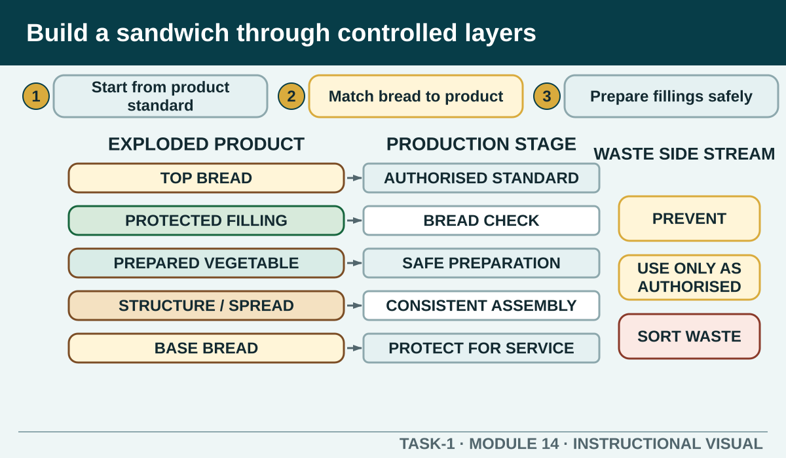

Combine bread and ingredient selection, mise en place, safe knife work, contamination and allergen control, consistent assembly, presentation, storage and waste management in one coherent production task.
Learning intention
What success looks like
Uses the teacher-nominated recipe and product standard
Includes hand, equipment, zone and allergen controls
Shows consistent assembly and quality checking
Finishes with service or storage, waste and clean-down
Core ideas
Build the complete picture
1
Start from the authorised product standard
2
Match the bread to the product
3
Prepare fillings in a safe sequence
4
Assemble for consistency and structure
Visual explanation
Build a sandwich through controlled layers

An exploded sandwich illustration aligns each product layer with the production stage beneath it: authorised recipe, bread check, prepared fillings, contamination and allergen controls, consistent assembly, protected presentation, then service or storage. A side stream shows prevention, reuse only as authorised and separated waste.
Worked example
Protect quality until service
Time, moisture and handling affect sandwich quality. Follow the authorised direction for immediate service, covering, labelling, holding or storage. Arrange the product so the customer can identify and handle it safely, and protect it during transport from the station.
Observed evidence: During a fictional sandwich service, the order record includes a confirmed modification, but an assembled product reaches the pass without a reliable identifier. Decision and reason: The learner decides presentation alone cannot prove which sandwich matches the request, so guessing could create an accuracy or safety failure. Safe action: They isolate the unidentified product, protect the remaining ingredients and check the authorised order and ingredient information with the teacher. A replacement is made only under the confirmed direction and kept identifiable through handover. Result: The uncertain product is not served. Next check or record: The learner completes the final identity, structure and presentation check, then records the correction and communication without claiming an assessment result.
Question the room
Why should ready-to-eat sandwich ingredients have a separated, controlled work zone?
They may receive no further safety step, so contamination transferred during assembly can reach the customer.
Separation makes all bread stay fresh indefinitely.
It removes the need to wash hands between tasks.
Apply
Sandwich production and waste sequence
Brief: prepare four consistent ready-to-eat salad sandwiches using the teacher-authorised recipe. The exact ingredients, quantities and local presentation standard remain in that recipe.
Order all nine stages.
Check the sequence.
Name one waste-prevention decision and one food-safety control that must operate together.
Exit ticket
Action · evidence · next step
Write a safe eight-step workflow for a teacher-nominated sandwich recipe. Begin with recipe and yield confirmation and finish with protected service or storage, waste control and clean-down.
One action I would take
The evidence I would check
The person or source I would confirm with
My next improvement
1 of 8
Speaker notes and delivery prompts
Open with this purpose: Combine bread and ingredient selection, mise en place, safe knife work, contamination and allergen control, consistent assembly, presentation, storage and waste management in one coherent production task.
Use Start from the authorised product standard to connect prior learning to the first observable workplace decision.
Model Protect quality until service by walking through this supplied example: Observed evidence: During a fictional sandwich service, the order record includes a confirmed modification, but an assembled product reaches the pass without a reliable identifier. Decision and reason: The learner decides presentation alone cannot prove which sandwich matches the request, so guessing could create an accuracy or safety failure. Safe action: They isolate the unidentified product, protect the remaining ingredients and check the authorised order and ingredient information with the teacher. A replacement is made only under the confirmed direction and kept identifiable through handover. Result: The uncertain product is not served. Next check or record: The learner completes the final identity, structure and presentation check, then records the correction and communication without claiming an assessment result.
Ask: Why should ready-to-eat sandwich ingredients have a separated, controlled work zone? Confirm the strongest response as They may receive no further safety step, so contamination transferred during assembly can reach the customer..
Listen for this misconception: Separation controls contamination; authorised handling and storage still control quality over time.
Move into Sandwich production and waste sequence, then collect the saved response and finish with the source boundary: Authorised source note: Source basis: authorised Cycle 1 bread, sandwich, fresh-produce, recipe, mise-en-place and waste learning. Exact sandwich products, recipe quantities, presentation standards and practical observation requirements remain Teacher to confirm.